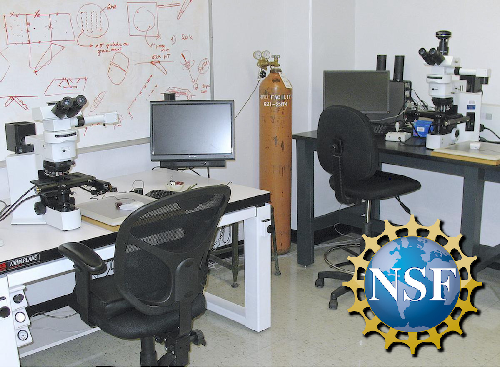
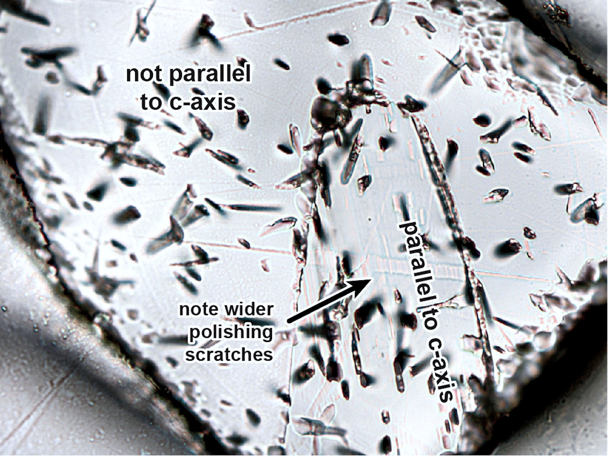
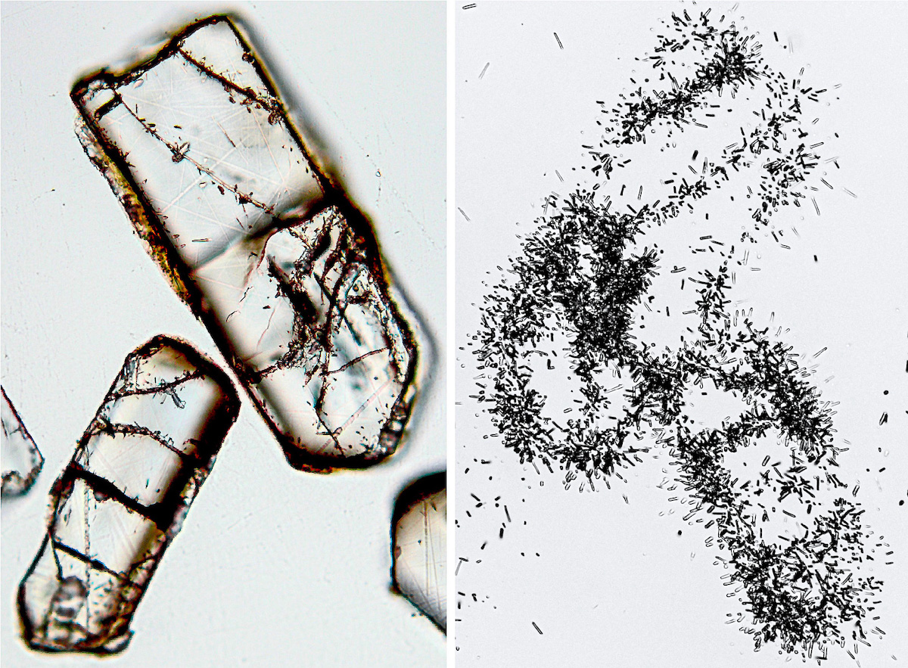
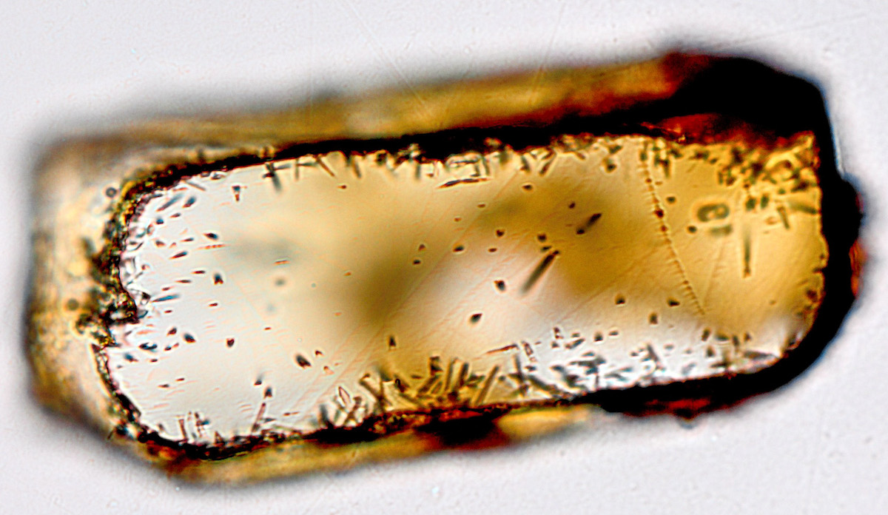
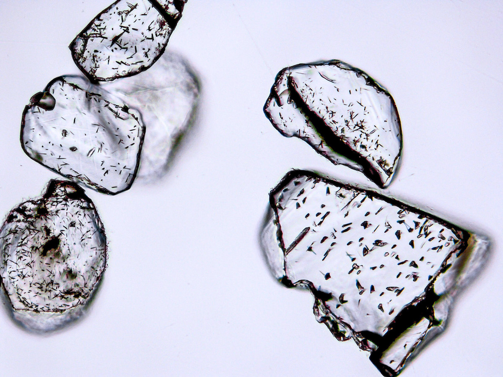
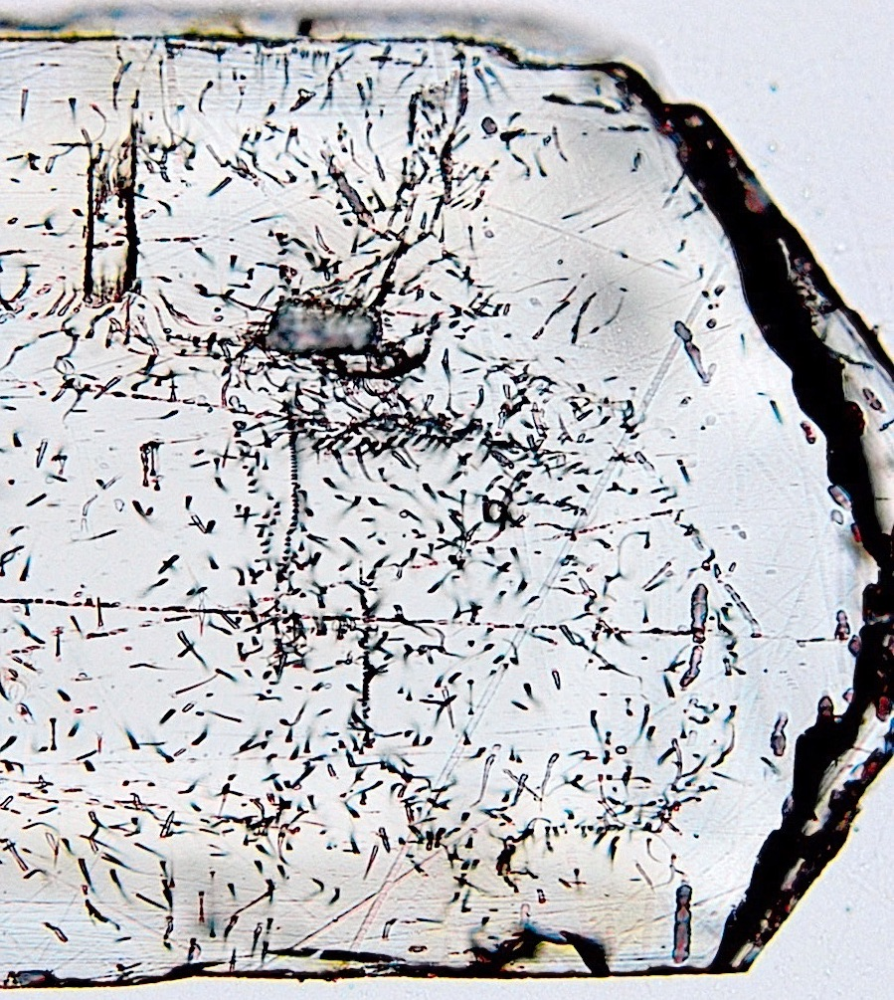

Dr. Stuart N. Thomson Department of Geosciences University of Arizona

In July 2009 I was awarded an NSF Instrumentation & Facilities award for a fission track microscope and automated stage set-up (EAR #0929922) to establish a fission track dating facility in the Department of Geosciences at the University of Arizona.
The system comprises an Olympus BX61 research microscope with transmitted and reflected light, motorized focus, digital camera system, and a Kinetek (Ludl) automated motorized stage. The system is controlled using FTStage software and a modified Calcomp tablet supplied by Trevor Dumitru (Stanford University) attached to a dedicated PC.
We have since expanded the University of Arizona Fission Track Laboratory to include a second Olympus BX51 microscope and stage system through the research group of Prof. Barbara Carrapa.
We also have dedicated laboratory space for mineral separation, fission track etching, and sample polishing. Equipment includes a Frantz magnetic separator, Buehler MetaServ 250 Grinder-Polisher, dedicated oven for zircon FT etching, fume hood for heavy liquid mineral separation, and a Leica binocular microscope for polishing inspection.
AGeS3 - Advancing Geochronology Science, Spaces, and Systems The University of Arizona Fission Track Laboratory is an official lab partner of the AGeS3 NSF-funded project to increase access to geochronology data and expertise, to support and grow the geochronology community, and to promote inclusive and collaborative science. For full details of this initiative please check out the AGeS3 Website The deadline for proposals is usually at the beginning of February each year, but I would advise any potential applicants interested in learning and conducting fission track analysis to please contact me (or any other lab partners) well in advance of the deadline.
Please also note that fission track analysis entails a very different approach to many other dating techniques. Firstly, sample mount preparation for fission track analysis needs to be carried out well in advance of any visit. I usually take care of this. We use the reliable, accurate, and well-tested external detector method (EDM) for fission track dating. As part of this process, samples require a neutron irradiation, which typically takes 4-6 weeks, and needs to be conducted prior to any visit. For any visit to the lab, training to learn to recognize and reliably count fission tracks, obtain a calibration factor, and to complete sample analysis on 8-10 samples typically takes 4-5 weeks.
Full details of the time frame required, analytical costs, and preparation required before any visit are summarized in our AGeS3 Lab Profile that is available as a downloadable PDF file at the link below.
Require fission track analyses as part of your project?
Interesting in opening up a new collaboration?
Weoffer competitive rates for undertaking high quality apatite and zircon fission track analysis, either as part of a project collaboration, or on a contract basis, for academia, government agencies, or industry.
I personally offer over 30 years of experience in acquiring and interpreting fission track data from all seven continents, as well as from numerous ocean drilling expeditions. I also have considerable experience in the acquisition of (U-Th)/He data, and working on laser ablation U-Pb dating of apatite and zircon, including the development of apatite U-Pb reference materials.
For mineral separation services we work in partnership with Tucson-based ZirChron LLC.
For more information on services, costs, turnaround times, or advise on how low-temperature thermochronology may benefit you or your project, please don't hesitate to contact me.
Some Fission Track Miscellanea
Having worked with fission tracks for over 30 years, I have come across all sorts of interesting oddities and observations, a few of which are highlighted below.

Apatite showing core with etch pits parallel to the crystallographic c-axis, and a second region with irregularly alighted etch pits signifying this part of the polished surface is not parallel to the c-axis. Note the wider polishing scratches in the section parallel to the c-axis. These wider, well-defined scratches can often be used to identify grains with polished surfaces parallel to the c-axis in the absence of fission tracks.

Left image shows apatite grains with cracks displaying very localized high fission track densities, and thus signifying locally very high uranium concentrations. The orange-brown coloration of these cracks suggests the high uranium may be associated with iron-rich "grunge". Image on right shows etched induced fission tracks from the external detector mica after sample thermal neutron irradiation, confirming the locally very high uranium concentrations focused along the cracks.

Another apatite grain showing orange-brown, likely iron-rich, coating. In this case the grain is also notable for showing fission tracks that appear to originate from this rim, suggesting this rim-coating has high uranium concentration. Such high uranium coatings will also likely lead to significant helium implantation into the grain produced during uranium decay to lead. Thus any (U-Th)/He age obtained from such a grain is likely to significantly overestimate its true (U-Th)/He cooling age. Indeed this sample, from a granite near the Beardmore Glacier in the Transantarctic Mountains, did produce very dispersed apatite (U-Th)/He ages, as we highlighted in the manuscript He et al., 2021, Earth and Planetary Science Letters, v. 567 - check the supplementary information.

Etched detrital apatite grains showing highly variable fission track widths (or diameters). This will be reflected in the measured "Dpar" values (Dpar = the diameter of the etch pit parallel to the c-axis, where the fission track intersects the polished grain surface). The grain on the lower right has particularly large fission tracks. Given the generally positive correlation between etched fission track width and higher chlorine content, this likely reflects a grain high in chlorine (relative to fluorine and hydroxyl (OH) in the F ,Cl, OH anion site), although other substitutions for calcium within the apatite crystal structure such as manganese, strontium, or light rare earth elements may also lead to larger etched fission track widths.

How many fission tracks do you see? In fact there are none, or very few. This is an apatite grain from a young high-level intrusion, and all the "track-like" features in this grain are likely etched crystal dislocations. A diagnostic sign these are not fission tracks is that they are not straight, but curved.
Induced fission tracks in an external mica detector. In this case the clouds of tracks highlight apatite fission track grains, but with several "star clusters" of high track density that represent induced tracks from small high uranium inclusion with the original apatite grain. Unsurprisingly, this sample yielded apatite (U-Th)/He ages that were very dispersed, and most significantly older than the intrusion age of the granite from which these apatite grains were obtained. Many of these inclusions were very small, and not easily identified during selection of grains for (U-Th)/He dating.
A selection of etched apatite grains showing extreme zoning of fission track density, reflecting extreme uranium zoning - both with uranium rich cores (with one grain having a low uranium authigenic apatite overgrowth). Good luck getting an accurate (U-Th)/He age from such grains!